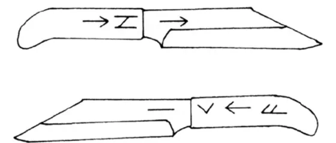

Material Grimoire
Knife

Overview
The knife is one of the most fundamental tools in magickal practice, used for carving runes, cutting and preparing wood for talismanic purposes, and in rites of defense and invocation. Unlike the Athame (which directs energy without cutting), the knife is a practical working tool that physically shapes materials for magickal use.
The Runic Knife (Sax)
In the Nordic runic tradition, the vitki's knife is a primary working tool. It is employed to carve runes, cut and prepare wood for talismanic purposes, and in rites of defense and invocation of runic forces.
Construction
- Hilt: Fashioned from wood or bone
- Blade: Of the "sax" type, a single-edged blade
- Dimensions: Approximately nine inches total length, with a blade five inches long and about one inch wide
Runic Inscriptions
The name of the vitki, transliterated into runes, may be etched into the hilt. Alternatively, a more complex formula may be devised to express the creative, shaping will of the runester.
One traditional formula consists of three T-runes (ᛏ), which impart ordering, successful force to the instrument, combined with a series of runes that ideographically express the nature of the knife:
- ᛁ = the concentrated ego
- ᚲ = controlled ability and creativity
- ᚷ = the cosmic pattern it is intended to express
- ᚨ = an invocation to Ódhínic force
The numerical total of these seven runes is 81, which is 9 × 9, the intensified creative force in the multiverse.